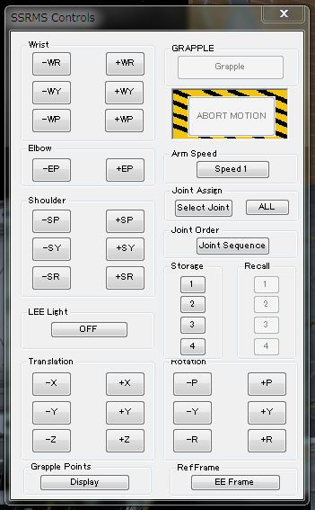
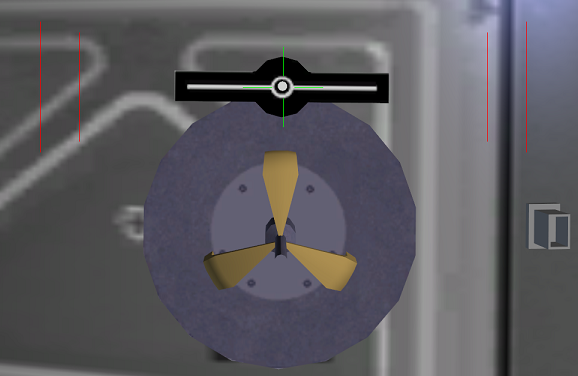
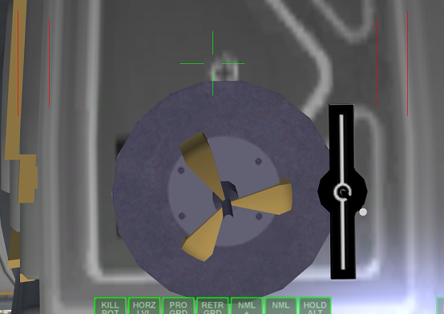
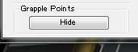
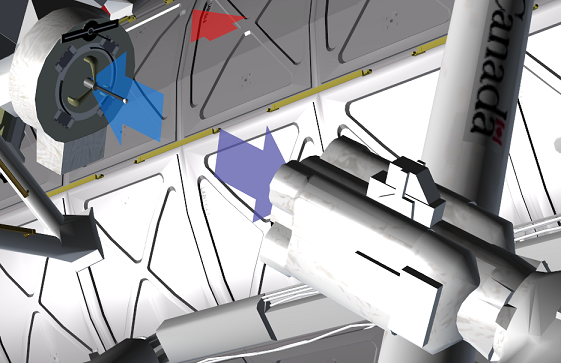
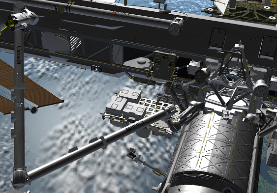
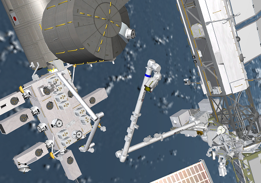

Canadarm2MODの移動方法
アームを起動する
F3キーを押してSSRMSDを選択する。
Ctrl+Spaceで操作ダイアログを呼び出す。
操作ダイアログを出したままにしておけば、ほかの宇宙船を選択した状態でも使用できる。
アームを操作する

Wrist（手首）Elbow（ひじ）Shoulder（肩）のボタンをクリックすることで、それぞれの関節を操作できる。
また、宇宙船のRCSと同じ操作で、テンキーを使ってアームを平行移動させたり、向きを変えることができる。
RCS LINなら平行移動、RCS ROTなら先端がその場で回転する。
ただし、関節の可動域の制約があるので、ロックした場合は各関節を個別に動かす必要がある。
ペイロードに接続する
カメラの位置をペイロードの目印に合わせて、アームの先端を密着させてから、Grappleボタンをクリック。

Shuttle FleetのRMSと違って、上下が合っていないと接続されない。
重要：ISS v3.2では、アームの取り付け位置が左に90°ずれている。※

※このMODはISS v3.2向けに作られたわけではないので、アームの取り付け位置にずれが生じている。
ISS A to Z、こうのとり、ドラゴン宇宙船などのMODでは、目印の通りに接続できる。
スペースシャトルのペイロードに接続する
スペースシャトルに搭載されたペイロードに接続する場合、手順は以下の通り。
- F3キーを押してShuttleBayを選択。
- Ctrl+Aを押してAttachment managerを起動。
- Dを押してペイロードを選択。
- Qを押してペイロードを切り離す。
あらかじめペイロードを切り離しておかないと、Grappleボタンを押しても接続されない。
ステーション上を移動させる
現実のカナダアーム2と同じく、ISSの上をしゃくとり虫のように移動できる。
PDGFを探す
ダイアログボックスでGrapple Pointsのボタンをクリックして、取り付け位置を示す矢印を表示させる。

青い矢印が表示されている取り付け位置（PDGF）を探す。

アームを接続する
アームの先端を接触させてGrappleボタンをクリック。
先端・根元の切り替え
この状態でCtrlキーを押しながらAを押すと、アームの先端と根元が入れ替わる。

また別の青い矢印のPDGFを探して接続することで、好きな場所に移動できる。
International Space Station v3.2やISS A to Zでは、MBSに接続して移動することもできる。
